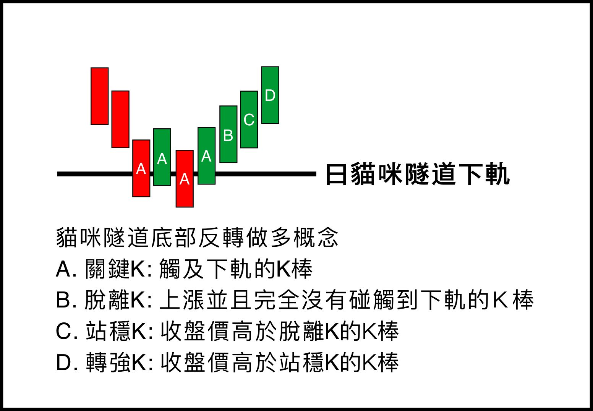

四關（貓咪隧道底部反轉做多，多方確立程度遞增）：
⏳ 觸軌 觸及下軌（關鍵K）＝跌夠深、等待出方向，約 7 成反轉向上、3 成續跌，尚未確認漲跌方向，最早進場但風險最高；
🥉 脫離 整根站上下軌的第一根上漲K（脫離K）＝多方形成；
🥈 站穩 收盤站回脫離K之上＝多方站穩；
🥇 轉強 收盤再突破站穩K＝多方無疑。關卡越前面越早、空間越大、但越不確定；越後面越確定、但已漲一段、空間越小。用戶自行按風險偏好選擇進場關卡。
中途轉弱：收盤跌破脫離K → 脫離資格取消、退回觸軌等待（仍留清單），再看往上重新脫離或往下觸及下軌。基準始終以當前下軌為準。
移除：當日最高碰到中線 → 已畢業（到中線該獲利，不論哪根K）；脫離K一出現就碰中線＝隧道太窄、無進場意義，不收；停在觸軌／脫離 10 個交易日未進展 → 過期。
籌碼欄（僅台股，獨立參考）：投信/外資連買、投信純度%、法人近5日合計（張，紅買綠賣）。籌碼是附加品質、任何關卡都可能有——「觸軌／剛脫離就有投信大買」正是最佳組合；點「📊 查籌碼」看完整法人與融資融券。
本頁為每日收盤結算資料，非即時報價；即時狀態請以您的券商工具為準。本頁僅供研究參考，非投資建議。
中途轉弱：收盤跌破脫離K → 脫離資格取消、退回觸軌等待（仍留清單），再看往上重新脫離或往下觸及下軌。基準始終以當前下軌為準。
移除：當日最高碰到中線 → 已畢業（到中線該獲利，不論哪根K）；脫離K一出現就碰中線＝隧道太窄、無進場意義，不收；停在觸軌／脫離 10 個交易日未進展 → 過期。
籌碼欄（僅台股，獨立參考）：投信/外資連買、投信純度%、法人近5日合計（張，紅買綠賣）。籌碼是附加品質、任何關卡都可能有——「觸軌／剛脫離就有投信大買」正是最佳組合；點「📊 查籌碼」看完整法人與融資融券。
本頁為每日收盤結算資料，非即時報價；即時狀態請以您的券商工具為準。本頁僅供研究參考，非投資建議。
